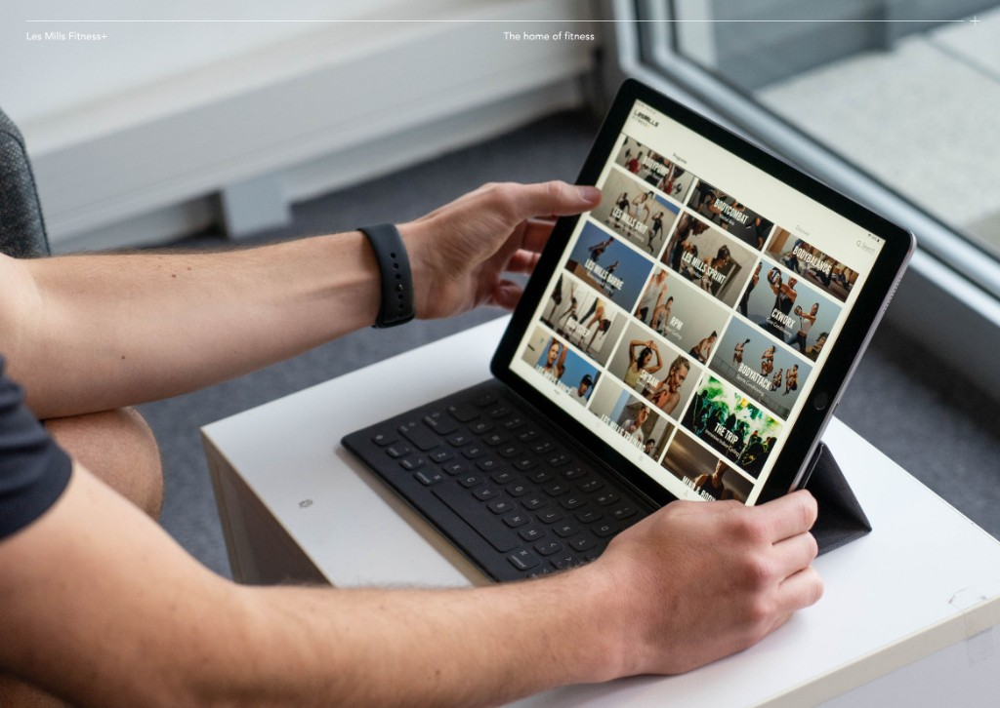
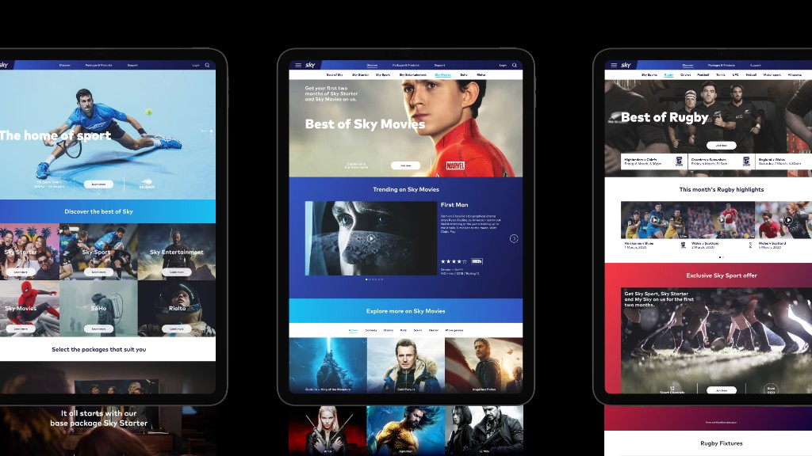

Rahul Sharma
I've made a career out of balancing the tension between feasible, desirable, and viable — to design, then deliver products that matter.
Profile
Expertise: Fractional Design Leader with principal level experience, AI Product Strategy, Design Research, Service Design and Brand Strategy.
Approach
Player Coach: I've held Principal roles leading complex, cross-functional projects from discovery to delivery. In these settings I lean on combinations of research and service design and human centred design to provide rigour and a firm focus on customer value.
On the human side, I've helped mentor and lead designers and researchers. This includes fostering mentoring individual contributors, fostering communities of practice and most recently exploring how AI tools can be used to accelerate and amplify teams without compromising on rigour or quality.
Experience

Xero: For 2.5 years I've lived at the Xero's AI journey. In that time I've set the foundations of Xero's AI Product Design Principles, defined how AI will evolve workflows across cashflow forecasting, tax and practice management and de-risked the commercialisation strategy. I also established the feature evaluation programme to take features from concept to GA (general availability).
- 0 → 1 AI Product Strategy
- GA Feature Evaluation Programme

Les Mills+: Transformed Fitness+ from a basic video library into a true fitness app: a multi-surface experience across TV, mobile, and web.
- 69% Trial-to-Paid
- 95% Customer Delight
- Bronze (UX Design) - Best Design Awards 2020

Sky Broadband: Defined Sky's entry into the New Zealand broadband market, architecting the experience blueprint including Acquisition (pricing and packaging); Sales (redesigning skytv.co.nz); and Support (installation and customer care). This laid the groundwork to transform Sky NZ from a satellite entertainment service into a broadband provider.
- 200% - Cart Conversion Lift
- +44 - NPS
- 85% - CSAT
Personal
Still reading? Nice. Well on a personal level I like to stay active. Thats a mix of coaching/convening cricket, dabbling in golf and building things. Oh and travel to, next up California Love.